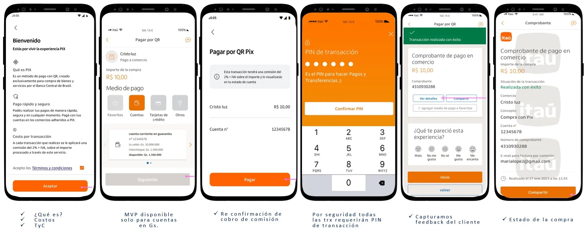
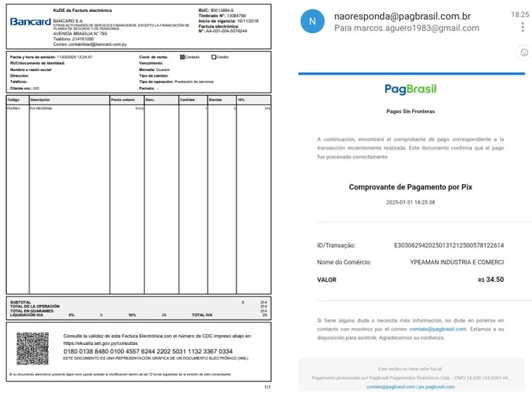
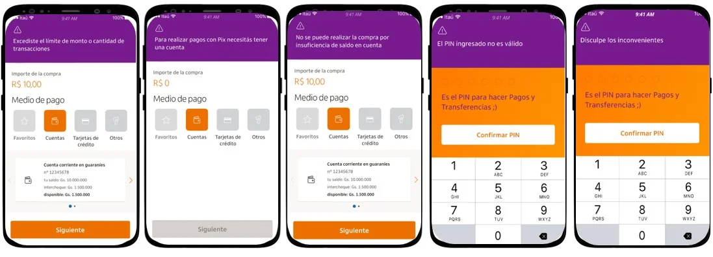
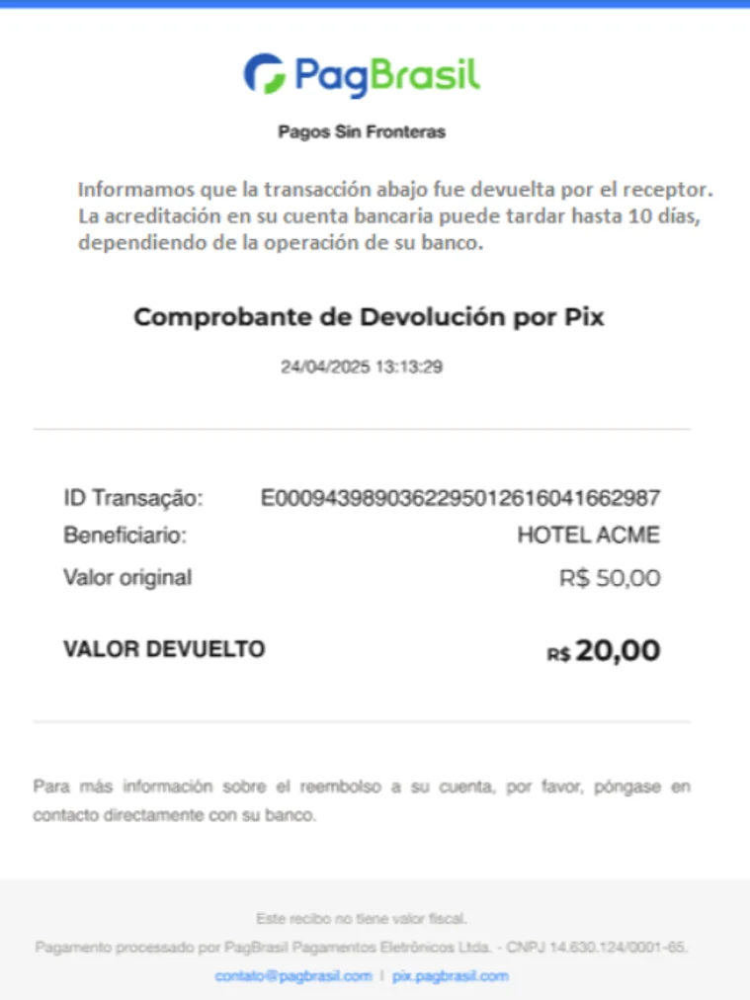
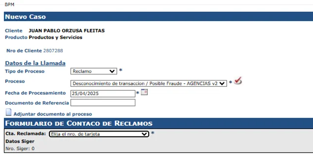

📌 ¿Qué es QR PIX?
Es un servicio que permite a los clientes realizar compras en Brasil usando PIX a través del lector QR en la app Itaú PY.
- Mejora la experiencia de compras
- Reduce el uso de efectivo en el exterior
- Ofrece mayor seguridad
⚙️ Condiciones Operativas
- MVP disponible solo para cuentas en guaraníes
- Requiere PIN de transacción en todas las operaciones
- Comisión del 2.2% + IVA sobre el valor convertido en guaraníes
- No disponible para clientes monoproducto TC
- Se permite uso de línea de sobregiro para compras
- Máximo 3 intentos fallidos por transacción

📄 Estado de la Compra
- Comprobante por transacción exitosa
- Factura por el 2% + IVA
- Envío diario y online
- Comprobante al comercio

🔒 Límites Operativos
- Máximo por transacción: 15.000 reales
- Acumulado por día: 20.000 reales
- Máximo de 20 transacciones por día
- No se pueden modificar individualmente → usar otro medio de pago
Pantallas de Error

↩️ Devoluciones
Pasos
- Cliente solicita al comercio la devolución dentro de los 90 días
- Recibe comprobante por mail registrado
- Devoluciones se procesan semanalmente
- Visualización en extracto
Tipos
- Parcial: Producto alternativo de menor valor
- Total: Cancelación completa de compra

Acreditación
- Se acredita el monto correspondiente y la comisión + IVA del valor devuelto
Speech sugerido – Solicitud de devolución:
“Sr./Sra. X, debe contactar al comercio donde realizó la compra dentro de los 90 días posteriores. Una vez iniciada la solicitud, recibirá una confirmación por correo. La devolución puede tardar hasta 10 días, y luego verá una nota de crédito por la comisión en su correo y perfil de SET.”
Speech sugerido – Solicitud en proceso:
“Sr./Sra. X, la notificación recibida confirma que la solicitud está en proceso. El correo incluye detalles del monto, fecha y plazo estimado de acreditación. Ante dudas, estamos a disposición.”
🚨 Desconocimiento / Posible Fraude
- Reportar en BPM: Desconocimiento de transacción / Posible Fraude – Agencias v2
- Adjuntar:
- Extracto con el monto no reconocido
- Evidencia de contacto con el comercio

- Dictamen de Prevención de Fraudes dentro de 15 días hábiles
Speech sugerido:
“Sr./Sra. X, para avanzar necesitamos que envíe al correo PREVENCIONDEFRAUDES@itau.com.py una imagen del extracto con el monto y evidencia del reclamo al comercio. Recibirá un dictamen en 15 días hábiles.”
⚖️ Disputas
- Categoría: Contracargo TD – E-commerce
- Reportar en BPM
- Adjuntar:
- Evidencia de monto duplicado en movimientos
- Evidencia de contacto con comercio
- Tiempo máximo para reportar: 110 días
- Evaluación hasta 180 días hábiles, dependiendo del análisis del comercio
⚖️ Disputas
- Tipo de caso: Contracargo TD – E-commerce
- Reportar vía BPM
- Documentación necesaria:
- Evidencia del pago duplicado
- Evidencia de contacto con el comercio solicitando devolución
- El cliente tiene hasta 110 días desde la compra para reportar
- Evaluación puede tardar hasta 180 días, sujeta al análisis del comercio
Speech – Pago duplicado:
“Sr./Sra. X, debe contactar al comercio dentro de los 90 días. Al recibir su solicitud, se enviará una confirmación al correo registrado y se gestionará en hasta 10 días. Al concretarse la devolución, se emitirá una nota de crédito por la comisión.”
Speech – Cliente no recibe devolución:
“Sr./Sra. X, para seguir con la gestión necesitamos que nos envíe al correo contracargo.doc@itau.com.py una imagen del movimiento duplicado y evidencia del reclamo al comercio. La evaluación puede tardar hasta 180 días.”
✅ Resumen Final
QR PIX brinda una nueva solución segura, moderna y simple para compras en Brasil desde la app Itaú PY. Sus principales beneficios son:
- Accesibilidad digital con controles por PIN
- Seguridad en cada transacción
- Protocolo para devoluciones, fraude y disputas
- Límites operativos definidos
- Comisiones claras y trazabilidad desde el extracto
Es fundamental brindar acompañamiento claro a los clientes, guiarlos en caso de errores o disconformidades, y registrar correctamente cada solicitud.